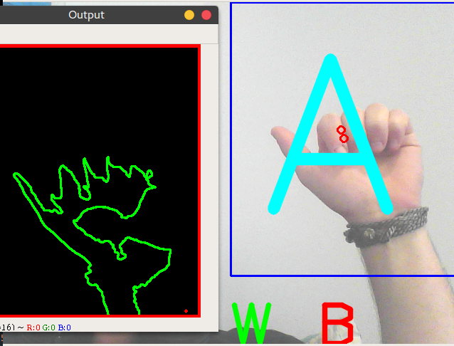
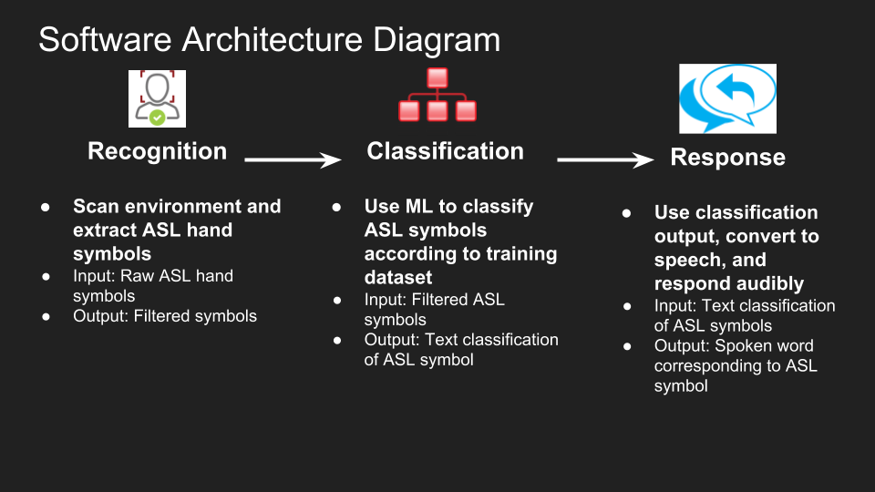

Signum
American Sign Language (ASL) is the sixth most used language in the US. It presents an interesting opportunity for us to be challenged to create something impressive but also meaningful. Signum is an American Sign Language (ASL) translator built using computer vision and machine learning.
Try Signum Now
An ASL Translator using CV and ML.
Running Signum for yourself
How to download the necessary files
In order to try Signum for yourself, you will need to clone this GitHub repository to your local machine, download the related packages and run the recognition program
$ git clone https://github.com/Utsav22G/ASL-Translator.git
$ cd ASL-Translator
$ pip install -r requirements.txt
$ python3 live_demo.pyOnce you've gotten this far, you're ready to get going. The program will prompt you to choose a camera; you can use an external camera if you want, but if you are using your computer's default camera you should enter 0 .
You can then follow the prompt to set the background, and begin testing signs to see the program recognize it.
About Signum
Signum is a program that can convert symbols from the ASL alphabet into speech.
Computer Vision
Signum uses OpenCV to interact with your computer's camera to see what hand genstures are being shown.
Machine Learning
In order to recognize what a hand gesture is in the ASL alphabet, we trained a neural net with a database of images showing the signs we care about. Using this training set of data, Signum is able to classify each symbol as whatever letter it is closest to.
Text-to-Speech
Once the algorithm has decided on what is being shown, we use Google's text-to-speech library (gTTS) to convert the text into spoken words.
Meet the Team

Diego Berny
Utsav Gupta
Resources
- OpenCV: Computer vision library
- Keras: Machine Learning Library
- gTTS: Google Text-to-Speech interface
- BU ASLRP: Used to generate dataset of ASL images